ISMRM Sunrise Practical Session
This document contains the second set of practical exercises for the ISMRM course on parallel imaging.
Contents
Excercise Data
All the data used in this set of exercises can be found in the file hansen_exercises.mat. We will start by clearing the workspace and loading the data
close all; clear all; load hansen_exercises.mat whos
Name Size Bytes Class Attributes data 256x256x8 8388608 double complex data_spiral 18176x8 2326528 double complex k_spiral 18176x2 290816 double noise_color 256x256x8 8388608 double complex noise_spiral 18176x8 2326528 double complex reg_img 256x256 524288 double smaps 256x256x8 8388608 double complex sp 256x256 524288 double w_spiral 18176x1 145408 double
Noise Pre-Whitening
The purpose of this exercise is to see the effects of noise pre-whitening. We will use a SENSE reconstruction as an example

where 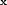 is the reconstructed image, 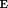 is the encoding (sensitivity matrix) and 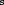 is the measured data.
Let's start with a naive SENSE reconstruction
smask = (sp == 1 | sp == 3); ncoils = size(smaps,3); nelements = numel(smaps)/ncoils; acc_factor = (numel(sp)/sum(smask(:))); unmix = ismrm_calculate_sense_unmixing(acc_factor,smaps); alias_img = ismrm_transform_kspace_to_image(data .* repmat(smask,[1 1 ncoils]),[1,2]);
Let's look at the aliased images:
ismrm_imshow(abs(alias_img),[],[2 4]);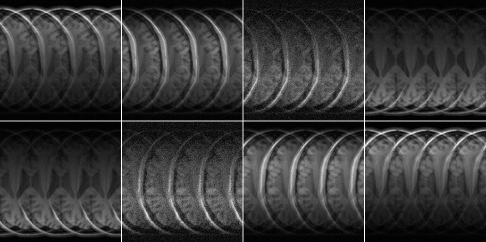
It is evident already from this view that a couple of channels have a different noise level (channels 3 and 6).
An now the actual SENSE reconstruction:
img = sum(unmix .* alias_img,3); ismrm_imshow(abs(img))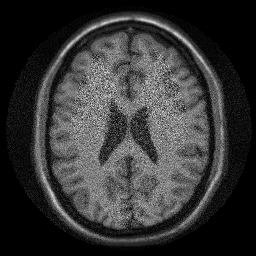
In that reconstruction we did not take the noise correlation into account. Let's have a look at it.
noise = reshape(noise_color,numel(noise_color)/ncoils, ncoils); noise = permute(noise,[2 1]); M = size(noise,2); Rn = (1/(M-1))*(noise*noise'); figure;imagesc(abs(Rn)); axis equal; axis off; colormap(jet);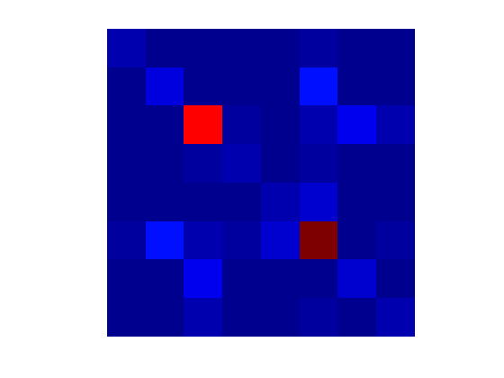
As we predicted from the raw aliased images, there is some increased noise in some channels.
Let's decoorelate:
dmtx = inv(chol(Rn,'lower'))*sqrt(2); %sqrt(2) for sd=1 in real and imag %Both data and noise coil sensitivities data_prew = ismrm_apply_noise_decorrelation_mtx(data,dmtx); smaps_prew = ismrm_apply_noise_decorrelation_mtx(smaps,dmtx);
%Now let's repeat the reconstruction:
unmix_prew = ismrm_calculate_sense_unmixing(acc_factor,smaps_prew);
alias_img_prew = ismrm_transform_kspace_to_image(data_prew .* repmat(smask,[1 1 ncoils]),[1,2]);
img_prew = sum(unmix_prew .* alias_img_prew,3);
ismrm_imshow(cat(3,abs(img),abs(img_prew)));
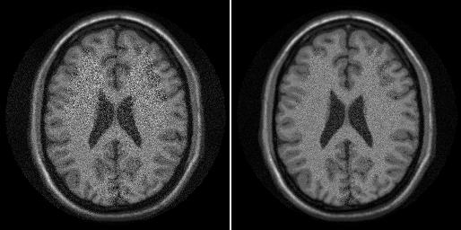 SNR Scaled Reconstruction
Now that we have performed noise-prewhitening, i.e. noise is scaled to sd=1, we would like to produce an image in SNR units.
For SNR scaled reconstruction, we need to make sure that all signal processing steps maintain SNR scaling.
Let's start by examining the transformation from k-space to image space:
%Generate white noise (like we have after prewhitening) noise_white = complex(randn(size(data)),randn(size(data))); %Mask out values that we don't acquire noise_white = noise_white.*repmat(smask,[1 1 ncoils]); %Transform from k-space to image: noise_test = ismrm_transform_kspace_to_image(noise_white,[1,2]);
Get the standard deviation
sd = std(real(noise_test(:)))
sd =
0.4986
As we can see the noise level is now about half of what it is supposed to be. This is because we have forgotten that only a quater of the samples are actually sampled and so we need to scale by the square root of the acceleration factor:
%Transform from k-space to image: noise_test = sqrt(acc_factor)*ismrm_transform_kspace_to_image(noise_white,[1,2]); %Now the standard deviation sd = std(real(noise_test(:)))
sd =
0.9972
By scaling by the acceleration factor we have maintained unit noise scaling through our reconstruction. Now we can "trivially" obtain an SNR scaled reconstruction:
unmix_prew = ismrm_calculate_sense_unmixing(acc_factor,smaps_prew); alias_img_prew = sqrt(acc_factor).*ismrm_transform_kspace_to_image(data_prew .* repmat(smask,[1 1 ncoils]),[1,2]); img_snr = sum(unmix_prew .* alias_img_prew,3) ./ sqrt(sum(abs(unmix_prew).^2,3)); ismrm_imshow(abs(img_snr)); colorbar;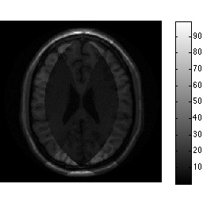
We can also easily inspect the g-map directly
gmap = sqrt(sum(abs(unmix_prew).^2,3)).*sqrt(sum(abs(smaps_prew).^2,3)); ismrm_imshow(abs(gmap)); colormap(jet); colorbar;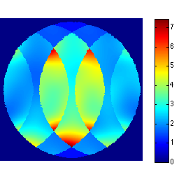
Pseudo Replica Method
What if we didn't have access to the unmixing coefficients directly? We can obtain SNR scaled reconstructions using the pseudo replica method.
for r=1:100, noise_white = complex(randn(size(data)),randn(size(data))); noise_white = noise_white.*repmat(smask,[1 1 ncoils]); s = data_prew + noise_white; tmp = sqrt(acc_factor).*ismrm_transform_kspace_to_image(s .* repmat(smask,[1 1 ncoils]),[1,2]); img_noise_rep(:,:,r) = sum(tmp .* unmix_prew,3); end g_pseudo = std(abs(img_noise_rep + max(abs(img_noise_rep(:)))),[],3); g_pseudo(g_pseudo < eps) = 1; snr_pseudo = mean(img_noise_rep,3)./g_pseudo; g_pseudo = g_pseudo.*sqrt(sum(abs(smaps_prew).^2,3)); ismrm_imshow([abs(img_snr) abs(snr_pseudo)]); colorbar; ismrm_imshow([abs(gmap) abs(g_pseudo)]); colormap(jet); colorbar;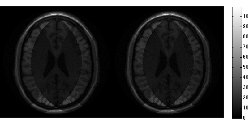 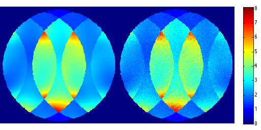
Iterative Non-Cartesian SENSE
Now let's look at non-Cartesian imaging. A spiral dataset is included in the example dataset.
First we noise pre-whiten
dmtx = ismrm_calculate_noise_decorrelation_mtx(noise_spiral); data_spiral = ismrm_apply_noise_decorrelation_mtx(data_spiral,dmtx); smaps_prew = ismrm_apply_noise_decorrelation_mtx(smaps,dmtx);
Then let us inspect the undersampled data
%Prepare NUFFT N = [size(smaps,1) size(smaps,2)]; J = [5 5]; K = N*2; nufft_st = nufft_init(k_spiral*2*pi,N,J,K,N/2,'minmax:kb'); recon_undersampled = nufft_adj(data_spiral .* repmat(w_spiral,[1 size(data_spiral,2)]),nufft_st); ismrm_imshow(abs(recon_undersampled),[],[2 4]);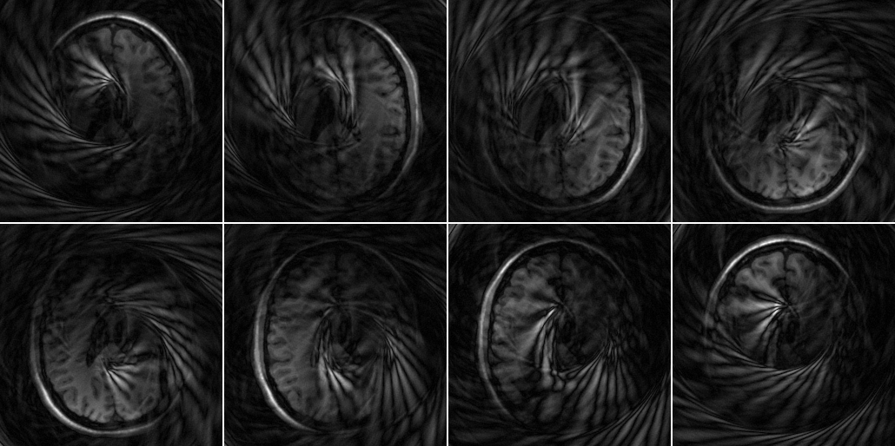
Low let's set up the non-Cartesian reconstruction First we need an encoding function to feed into LSQR:
dbtype ismrm_encoding_non_cartesian_SENSE.m
1 function outp = ismrm_encoding_non_cartesian_SENSE(inp,csm,nufft_st,weights,transpose_indicator)
2
3 scale = sqrt(prod(prod(nufft_st.Kd))/numel(weights(:)));
4 if (strcmp(transpose_indicator,'transp')),
5 samples = size(nufft_st.om,1);
6 coils = numel(inp)/samples;
7 inp = reshape(inp,samples,coils);
8 outp = (nufft_adj(inp .* repmat(sqrt(weights),[1 coils]),nufft_st)./(sqrt(prod(nufft_st.Kd))))*scale;
9 outp = sum(conj(csm) .* outp,3);
10 outp = outp(:);
11 elseif (strcmp(transpose_indicator, 'notransp')),
12 outp = repmat(reshape(inp,size(csm,1),size(csm,2)),[1 1 size(csm,3)]) .* csm;
13 outp = (nufft(outp,nufft_st)./(sqrt(prod(nufft_st.Kd))))*scale;
14 outp = outp .*repmat(sqrt(weights),[1 size(outp,2)]);
15 outp = outp(:);
16 else
17 error('Transpose flag not appropriately defined');
18 end
19
20 return
21
Now let's set up the LSQR solver using this function
w = w_spiral*prod(K); E = @(x,tr) ismrm_encoding_non_cartesian_SENSE(x,smaps_prew,nufft_st,w,tr); img_spiral = lsqr(E, data_spiral(:) .* repmat(sqrt(w),[size(smaps_prew,3),1]),1e-3,50); img_spiral = reshape(img_spiral,size(smaps_prew,1),size(smaps_prew,2)); ismrm_imshow(abs(img_spiral));
lsqr converged at iteration 47 to a solution with relative residual 0.059.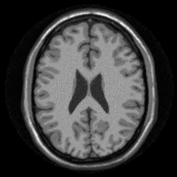
This functionality is encapsulated in the ismrm_non_cartesian_sense.m function.
help ismrm_non_cartesian_sense
[img,snr,g,noise_psf] = ismrm_non_cartesian_sense(inp,k,w,csm,replicas)
Non-Cartesian SENSE reconstruction. Uses Matlab LSQR to solve.
It is recommended to input data with pre-whitened noise scale to sd=1.
Gridding weights should be scaled such that sum(w(:)) is equal to the
fraction of k-space that the samples cover, i.e. pi*0.5^2 for a circle.
INPUT:
- inp [nsamples,coils] : Input k-space data (vector)
- k [nsamples,2] : k-space coordinates, range-0.5:0.5
- w [nsamples] : vector of gridding weights
- csm [x,y,coil] : Coil sensitivities
- reg [x,y] : Image space regularization mask
- lambda scalar : regularization factor
- replicas scalar (dafault 100) : Number of replicas to run if SNR
is requested
OUTPUT:
- img [x,y] : Output image
- snr : An image in SNR units.
- g : A g-map (assuming image_formation_func doesn't scale)
- noise_psf : Point spread function of the noise
Code made available for the ISMRM 2013 Sunrise Educational Course
Michael S. Hansen (michael.hansen@nih.gov)
To reconstruct using this function use:
img_spiral2 = ismrm_non_cartesian_sense(data_spiral(:),k_spiral,w_spiral,smaps_prew); ismrm_imshow(cat(3,abs(img_spiral),abs(img_spiral2)));
Warning: spdiag is superceded by diag_sp lsqr stopped at iteration 20 without converging to the desired tolerance 0.001 because the maximum number of iterations was reached. The iterate returned (number 20) has relative residual 0.059.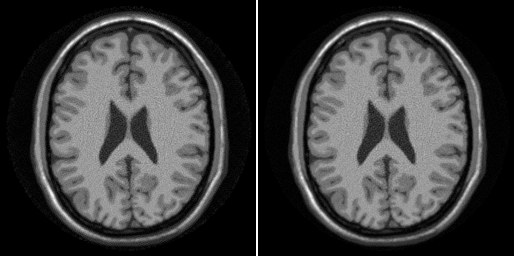
For a demo on regularized non-Cartesian parallel imaging look in ismrm_demo_regularization_iterative_sense.m
Additional Demos
- ismrm_demo_cartesian_snr_units.m
Reconstruction in SNR units using Cartesian data
- ismrm_demo_iterative_cartesian.m
Cartesian iterative reconstruction. Demonstrates both SENSE and SPIRiT reconstruction techniques
- ismrm_demo_noise_decorrelation.m
Demonstration of the effects of noise decorrelation.
*ismrm_demo_regularization_iterative_sense.m
Demonstration of the effects of regularization in non-Cartesian parallel imaging
- ismrm_demo_non_cartesian.m
Demonstration of non-Cartesian parallel imaging with SENSE and SPIRiT